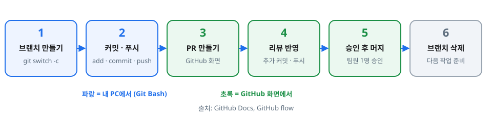

1장 · Git과 GitHub로 협업하기Git과 GitHub는 왜 첫 장인가용어 정리 — 이 장에서 처음 만나는 말설치와 첫 설정 — Git Bash와 GitHub 계정커밋은 사진 한 장 — 작업 폴더 · 스테이징 · 저장소따라하기 — 첫 저장소와 첫 커밋브랜치는 이름표 — switch와 mergeGitHub와 원격 저장소 — push · clone · fetch · pull따라하기 — 충돌은 고장이 아니라 대화 요청Pull Request와 GitHub Flow — 합쳐 달라는 요청서GitHub Organizations — 우리 과정의 팀 저장소올리면 안 되는 것과 되돌리기 — .gitignore · restore · revert강사 코드 태그로 따라잡기 — clone · tag · switch --detach정리와 체크리스트실습문제와 힌트 — 기본 · 필수 · 도전
1장. Git과 GitHub로 협업하기
Pull Request와 GitHub Flow — 합쳐 달라는 요청서
한 줄 요약
Pull Request(PR)는 "내 브랜치를 main에 합쳐 주세요"라는 요청서입니다. 팀원이 코드를 읽고 의견을 단 뒤 승인하면 합칩니다. PR은 Git이 아니라 GitHub의 기능입니다.
1. 팀 작업 흐름: GitHub Flow 6단계

이 과정의 모든 팀 프로젝트는 아래 순서로만 작업합니다. (GitHub Docs — GitHub flow)
| 단계 | 어디서 | 명령 또는 버튼 |
|---|---|---|
| 1. 브랜치 만들기 | Git Bash | git switch -c feature/12-login |
| 2. 커밋하고 푸시 | Git Bash | git add → git commit → git push -u origin feature/12-login |
| 3. PR 만들기 | GitHub | Compare & pull request 버튼 (완성 전이면 Draft) |
| 4. 리뷰 의견 반영 | Git Bash | 고치고 다시 commit → push (PR이 자동 갱신) |
| 5. 승인 후 머지 | GitHub | 팀원 1명 Approve → Merge pull request |
| 6. 브랜치 삭제 | GitHub + Git Bash | Delete branch → git switch main → git pull |
main에는 PR로만 합칩니다. 팀 저장소는 main에 직접 push하면 거절되도록 설정되어 있습니다(10절).
2. 좋은 PR 쓰기
팀 저장소에는 PR 템플릿이 들어 있어서, PR을 만들면 아래 칸이 자동으로 나옵니다.
## 무엇을 했나
- 로그인 API(POST /api/login) 추가
## 어떻게 확인했나
- curl로 로그인 성공/실패 각각 확인
## 리뷰어가 봐야 할 곳
- AuthService.issueToken(): 로그인 성공 시 사용자 id로 토큰을 만들고 1시간 뒤 만료되게 한다.
## 관련 이슈
- closes #12
- PR 하나에는 기능 하나만 담습니다. 리뷰하는 사람이 10분 안에 읽을 수 있는 크기가 좋습니다.
closes #12라고 쓰면 PR이 합쳐질 때 12번 Issue가 자동으로 닫힙니다.
3. 좋은 리뷰 하기
리뷰는 사람이 아니라 코드에 대해 씁니다. 아래 세 가지만 확인해도 충분합니다.
| 확인할 것 | 리뷰 댓글 예시 |
|---|---|
| 돌아가는가 | "브랜치 받아서 실행해 봤고 로그인 성공 확인했습니다." |
| 읽히는가 | "check()보다 isPasswordMatched()가 뜻이 더 잘 보일 것 같아요." |
| 계층 구조를 지키는가 | "Controller에서 Repository를 직접 부르고 있어요. Service로 옮기면 어떨까요?" |
모두 괜찮으면 Approve, 고칠 게 있으면 Request changes를 누릅니다.
4. 이름 짓기 규칙
| 대상 | 규칙 | 예시 |
|---|---|---|
| 브랜치 | 종류/이슈번호-내용 | feature/12-login, fix/15-404-error |
| 커밋 메시지 | 종류: 한 일 | feat: 로그인 API 추가, fix: 없는 글 404 응답, docs: README 실행 방법 |
커밋 메시지 앞의 feat, fix, docs는 공개 규약인 Conventional Commits의 형식입니다. (conventionalcommits.org)
| 종류 | 뜻 |
|---|---|
feat |
새 기능 |
fix |
버그 수정 |
docs |
문서 |
refactor |
동작은 같고 구조만 개선 |
test |
테스트 추가·수정 |
chore |
설정, 빌드 등 기타 |
핵심 정리
- PR은 "합쳐 주세요" 요청서다. GitHub 기능이다.
- 브랜치 → 커밋·푸시 → PR → 리뷰 반영 → 승인 후 머지 → 브랜치 삭제.
- PR에는 무엇을 했는지, 어떻게 확인했는지, 리뷰어가 봐야 할 곳을 쓴다.
- 브랜치는
feature/12-login, 커밋은feat: 로그인 API 추가.